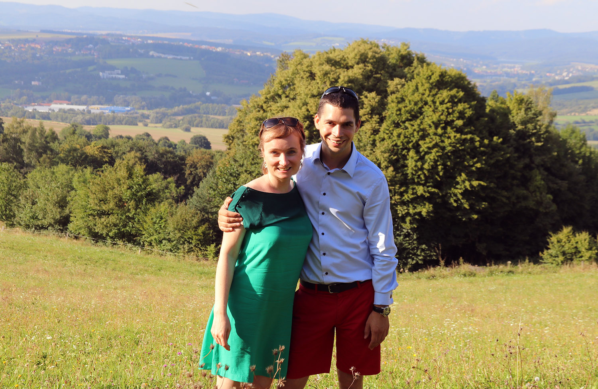
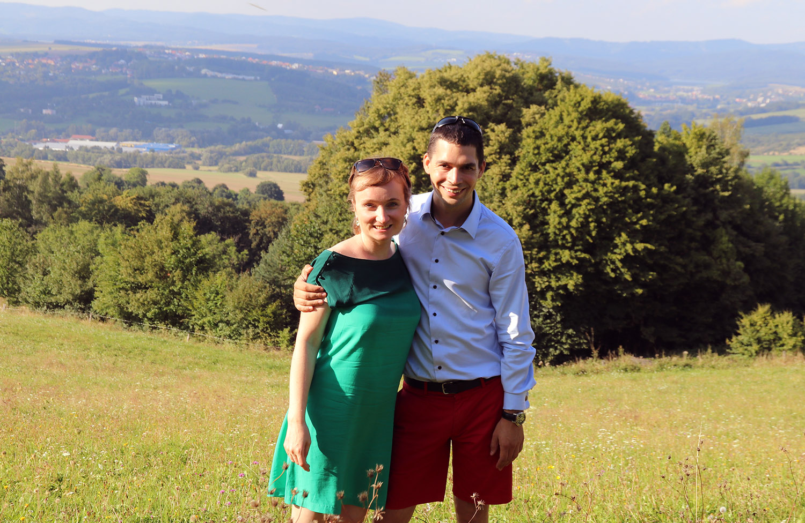

Však vy už tušíte. Rozhodli jsme se, že od 8. 4. 2017 zůstaneme Kovářovi na celý život.
Jsme moc rádi, že to oslavíte s námi!
8. dubna 2017

Však vy už tušíte. Rozhodli jsme se, že od 8. 4. 2017 zůstaneme Kovářovi na celý život.
Jsme moc rádi, že to oslavíte s námi!
Celé svatební veselí proběhne v jízdárně Hejtmánkovice u Broumova. Obřad začne ve 12:30 h. Přijeďte prosím na 11. h - chceme se s vámi přivítat. Bude na vás také čekat občerstvení.
Slečno Kovářová, rozhodla jste se užívat manželovo příjmení...
Po obřadu se společně vyfotíme a půjdeme na oběd.
Odpoledne je v plánu volná zábava (well, je to na vás), děti si budou moci zajezdit na ponících (přibalte jim pohodlné oblečení a obuv). Večer nám bude hrát živá hudba (nechte se překvapit!) - doufáme, že s námi vydržíte do pozdních nočních hodin (večerka nebude). Rozvoz pro ty, kteří budou ubytováni v okolí, máme zajištěn.
Krásné prostory jízdárny Hejtmánkovice. Je to fantastický konec světa, až za Broumovskými stěnami.
Kdybyste si náhodou lámali hlavu, čím nás obdarovat, budeme rádi za cokoliv, co se vejde do obálky ;-)
Broumovsko je malebný a možná trochu zapomenutý kraj, který jsme si zamilovali. Jestli můžete, prodlužte si pobyt a navštivte např.
Eva a Pavel Kovářovi. Potkali jsme se před více než 4mi lety na oslavě narozenin Lenky a Oťase ve mlejně. Nějaký čas už spolu spokojeně bydlíme v Praze-Kobylisích spolu s naším neposedným a úžasným pejskem - Black Bandits Twist.